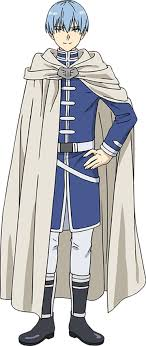
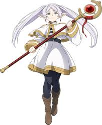
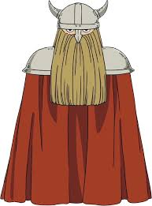
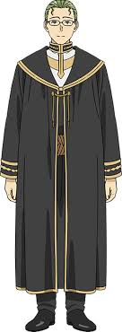
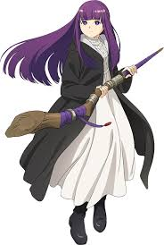

himmel
Despite bearing the title "hero," Himmel is not the main protagonist of the story. His death is shown in the first episode of the show, but he serves as a driving force for Frieren, who slowly processes her feelings for him and uses her previous journey as guidance in her new one. His being a human makes him have a lifespan far shorter than any elf, hence the untimely parting.

frieren
The protagonist and the titular character of the Anime, Frieren is an elven mage, incredibly talented and powerful. She is a member of both the Hero Party and her own team. Quite detached from the rest of the world, she dedicated her life to studying magic but ended up taking on an apprentice for her new adventure.

eisen
Eisen is the muscle of the hero party; he is a classic dwarf who excels in the art of melee combat and is always ready to defend his allies in their battles. There is more to him than a brawl. However, he is an adoptive father to Stark and acts as a wise mentor for him.

heiter
One of Friesen’s and Himmel’s original companions. Heiter often serves as the heart of the Hero Party. Despite his occupation as a priest, he’s relatively easygoing and has found his joy in simple pleasures, especially drinking. He’s also a loyal friend whom others can always count on during their journey.

fern
One of the key characters and an apprentice to Frieren, Fern is a talented mage with huge potential, which she slowly unravels during the story. She is quite curious about the world around her but can be quite impatient and emotional, making her a foil to her mentor, Frieren. A lot of the story is focused on her journey and developmen t.